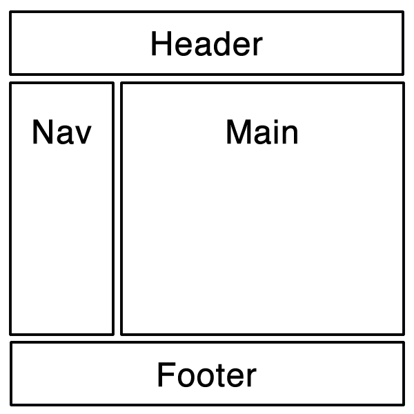

前端打包黑暗史
在很长的一段前端历史里，是不存在打包这个说法的。那个时候页面基本是纯静态的或者服务端渲染的，没有 Ajax，也没有 jQuery。那个时候的 JavaScript 就像个玩具，用处大概就是在侧栏弄个时钟，用 media player 放个 mp3 之类的脚本，代码量不是很多，直接放在 <script> 标签里或者弄个 js 文件引一下就行，日子过得很轻松愉快。
随后的几年，人们开始尝试在一个页面里做更多的事情。容器的显示，隐藏，切换。用 css 写的弹层，图片轮播等等。但如果一个页面内不能向服务器请求数据，能做的事情毕竟有限的，代码的量也能维持在页面交互逻辑范围内。这时候很多人开始突破一个页面能做的事情的范围，使用隐藏的 iframe 和 flash 等作为和服务器通信的桥梁，新世界的大门慢慢地被打开，在一个页面内和服务器进行数据交互，意味着以前需要跳转多个页面的事情现在可以用一个页面搞定。但由于 iframe 和 flash 技术过于 tricky 和复杂，并没能得到广泛的推广。
直到 Google 推出 Gmail 的时候（2004 年），人们意识到了一个被忽略的接口：XMLHttpRequest, 也就是我们俗称的 AJAX, 这是一个使用方便的，兼容性良好的服务器通信接口。从此开始，我们的页面开始玩出各种花来了，前端一下子出现了各种各样的库，Prototype、Dojo、MooTools、Ext JS、jQuery…… 我们开始往页面里插入各种库和插件，我们的 js 文件也就爆炸了。
随着 js 能做的事情越来越多，引用越来越多，文件越来越大，加上当时大约只有 2Mbps 左右的网速，下载速度还不如 3G 网络，对 js 文件的压缩和合并的需求越来越强烈，当然这里面也有把代码混淆了不容易被盗用等其他因素在里面。JSMin、YUI Compressor、Closure Compiler、UglifyJS 等 js 文件压缩合并工具陆陆续续诞生了。压缩工具是有了，但我们得要执行它，最简单的办法呢，就是 windows 上搞个 bat 脚本，mac / linux 上搞个 bash 脚本，哪几个文件要合并在一块的，哪几个要压缩的，发布的时候运行一下脚本，生成压缩后的文件。
基于合并压缩技术，项目越做越大，问题也越来越多，大概就是以下这些问题：
- 库和插件为了要给他人调用，肯定要找个地方注册，一般就是在 window 下申明一个全局的函数或对象。难保哪天用的两个库在全局用同样的名字，那就冲突了。
- 库和插件如果还依赖其他的库和插件，就要告知使用人，需要先引哪些依赖库，那些依赖库也有自己的依赖库的话，就要先引依赖库的依赖库，以此类推。
恰好就在这个时候（2009 年），随着后端 JavaScript 技术的发展，人们提出了 CommonJS 的模块化规范，大概的语法是： 如果 a.js 依赖 b.js 和 c.js， 那么就在 a.js 的头部，引入这些依赖文件：
var b = require('./b')
var c = require('./c')
那么变量 b 和 c 会是什么呢？那就是 b.js 和 c.js 导出的东西，比如 b.js 可以这样导出：
exports.square = function(num) {
return num * num
}
但是 CommonJS 在浏览器内并不适用。因为 require() 的返回是同步的，意味着有多个依赖的话需要一个一个依次下载，堵塞了 js 脚本的执行。所以人们就在 CommonJS 的基础上定义了 Asynchronous Module Definition (AMD) 规范（2011 年），使用了异步回调的语法来并行下载多个依赖项，比如作为入口的 a.js 可以这样写：
require(['./b', './c'], function(b, c) {
var n = b.square(2)
console.log(c)
})
相应的导出语法也是异步回调方式，比如 c.js 依赖 d.js， 就写成这样：
define(['./d'], function(d) {
return d.PI
})
可以看到，定义一个模块是使用 define() 函数，define() 和 require() 的区别是，define() 必须导出，require() 不需要导出东西，也无法作为被依赖项被其他文件导入，因此一般用于入口文件，比如页面中这样加载 a.js:
<script src="js/require.js" data-main="js/a"></script>
以上是 AMD 规范的基本用法，更详细的就不多说了（反正也淘汰了～）。
js 模块化问题基本解决了，css 和 html 也没闲着。 less，sass，stylus 等 css 预处理器横空出世，能帮我们简化 css 的写法，自动给你加 vendor prefix（前缀）。html 在这期间也出现了一堆模板语言， handlebars，ejs，jade，可以把 ajax 拿到的数据通过模板渲染，然后用 innerHTML 插入到页面上。
托 AMD 和 CSS 预处理和模板语言的福，我们的编译脚本也洋洋洒洒写了百来行。命令行脚本有个不好的地方就是 windows 和 mac/linux 是不通用的，如果有跨平台需求的话，windows 要装个可以执行 bash 脚本的命令行工具，比如 msys（目前最新的是 msys2），或者使用 php 或 python 等其他语言的脚本来编写，对于非全栈型的前端程序员来说，写 bash / php / python 还是很生涩的。
nodejs的出现对于构建工具具有重要的意义，在没有nodejs之前，js只能执行在浏览器环境下，所以意味着对发布前的js文件要进行处理，十分局限，没有打包工具，只能用上面的脚本来处理文件，甚至还需要借助一些在线压缩网站，开发体验十分差劲
因此我们需要一个简单的打包工具，可以利用各种编译工具，编译/压缩 js、css、html、图片等资源。然后 Grunt 产生了（2012 年），配置文件格式是我们最爱的 js，写法也很简单，社区有非常多的插件支持各种编译、lint、测试工具。一年多后另一个打包工具 gulp 诞生了，扩展性更强，采用流式处理效率更高。
Grunt和Gulp都属于任务流工具Tast Runner，两者都是通过配置好配置文件，但是相比之下，gulp通过函数式编写配置文件，以及前端人员所熟悉的链式调用，让大家觉得更易懂更易上手，gulp本身借鉴了grunt的经验进行升级和加入一些新特性。正因为流管理多任务配置输出方式的提高，人们逐渐选择使用Gulp而放弃grunt。有了grunt和gulp，文件压缩处理的工作解决了，代码校验和测试也可以处理了，但是模块化处理依然没有什么结果。
依托 AMD 模块化编程，SPA（Single-page application）的实现方式更为简单清晰，一个网页不再是传统的类似 word 文档的页面，而是一个完整的应用程序。SPA 应用有一个入口页面，我们通常把它命名为 index.html、app.html、main.html，这个 html 的 <body> 一般是空的，或者只有总的布局（layout），比如下图：

布局会把 header、nav、footer 的内容填上，但 main 区域是个空的容器。这个作为入口的 html 最主要的工作是加载启动 SPA 的 js 文件，然后由 js 驱动，根据当前浏览器地址进行路由分发，加载对应的 AMD 模块，然后该 AMD 模块执行，渲染对应的 html 到页面指定的容器内（比如图中的 main）。在点击链接等交互时，页面不会跳转，而是由 js 路由加载对应的 AMD 模块，然后该 AMD 模块渲染对应的 html 到容器内。
虽然 AMD 模块让 SPA 更容易地实现，但小问题还是很多的：
- 不是所有的第三方库都是 AMD 规范的，这时候要配置
shim，很麻烦。 - 虽然 RequireJS 支持通过插件把 html 作为依赖加载，但 html 里面的
<img>的路径是个问题，需要使用绝对路径并且保持打包后的图片路径和打包前的路径不变，或者使用 html 模板语言把src写成变量，在运行时生成。 - 不支持动态加载 css，变通的方法是把所有的 css 文件合并压缩成一个文件，在入口的 html 页面一次性加载。
- SPA 项目越做越大，一个应用打包后的 js 文件到了几 MB 的大小。虽然 r.js 支持分模块打包，但配置很麻烦，因为模块之间会互相依赖，在配置的时候需要 exclude 那些通用的依赖项，而依赖项要在文件里一个个检查。
- 所有的第三方库都要自己一个个的下载，解压，放到某个目录下，更别提更新有多麻烦了。虽然可以用 npm 包管理工具，但 npm 的包都是 CommonJS 规范的，给后端 Node.js 用的，只有部分支持 AMD 规范，而且在 npm 3 之前，这些包有依赖项的话也是不能用的。后来有个 bower 包管理工具是专门的 web 前端仓库，这里的包一般都支持 AMD 规范。
- AMD 规范定义和引用模块的语法太麻烦，上面介绍的 AMD 语法仅是最简单通用的语法，API 文档里面还有很多变异的写法，特别是当发生循环引用的时候（a 依赖 b，b 依赖 a），需要使用其他的 语法 解决这个问题。而且 npm 上很多前后端通用的库都是 CommonJS 的语法。后来很多人又开始尝试使用 ES6 模块规范，如何引用 ES6 模块又是一个大问题。
- 项目的文件结构不合理，因为 grunt/gulp 是按照文件格式批量处理的，所以一般会把 js、html、css、图片分别放在不同的目录下，所以同一个模块的文件会散落在不同的目录下，开发的时候找文件是个麻烦的事情。code review 时想知道一个文件是哪个模块的也很麻烦，解决办法比如又要在 imgs 目录下建立按模块命名的文件夹，里面再放图片。
到了这里，我们的主角 webpack 登场了（2012 年）（此处应有掌声）。
和 webpack 差不多同期登场的还有 Browserify。这里简单介绍一下 Browserify。Browserify 的目的是让前端也能用 CommonJS 的语法 require('module') 来加载 js。它会从入口 js 文件开始，把所有的 require() 调用的文件打包合并到一个文件，这样就解决了异步加载的问题。那么 Browserify 有什么不足之处导致我不推荐使用它呢？主要原因有下面几点：
- 最主要的一点，Browserify 不支持把代码打包成多个文件，在有需要的时候加载。这就意味着访问任何一个页面都会全量加载所有文件。
- Browserify 对其他非 js 文件的加载不够完善，因为它主要解决的是
require()js 模块的问题，其他文件不是它关心的部分。比如 html 文件里的 img 标签，它只能转成 Data URI 的形式，而不能替换为打包后的路径。 - 因为上面一点 Browserify 对资源文件的加载支持不够完善，导致打包时一般都要配合 gulp 或 grunt 一块使用，无谓地增加了打包的难度。
- Browserify 只支持 CommonJS 模块规范，不支持 AMD 和 ES6 模块规范，这意味旧的 AMD 模块和将来的 ES6 模块不能使用。
基于以上几点，Browserify 并不是一个理想的选择。那么 webpack 是否解决了以上的几个问题呢? 答案是肯定的。